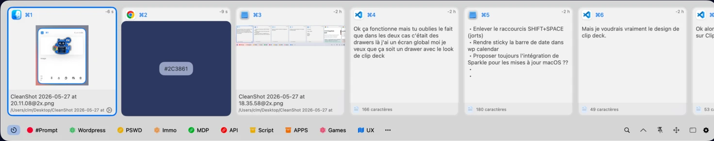

Tout ce que vous copiez.
Texte, lien, image, fichier et couleur hex, avec aperçu enrichi et application source.
L’espace de travail qui suit vos idées
Notes, calculs et presse-papiers se retrouvent en un geste. Une app native, à la vitesse de vos idées.

Une idée ne devrait pas s’arrêter pour une opération. Écrivez, calculez et retrouvez votre rythme dans la même note.
Budget de lancement
Textes, URL, images, fichiers ou couleurs : le tiroir global garde l’historique à portée de clavier, même après avoir changé d’app.
Texte, lien, image, fichier et couleur hex, avec aperçu enrichi et application source.
Recherche instantanée, filtres, tags, favoris, éléments épinglés et verrouillés.
Entrée ou ⌘V colle dans la dernière app active. ⌘Entrée transforme l’élément en note.
Besoin de tout voir ? La fenêtre PKClipboard ajoute une grille paginée, la navigation au clavier, les aperçus agrandis et Quick Look pour les fichiers.
⌘K cherche dans les titres et le contenu, ouvre vos notes, en crée de nouvelles et mène aux réglages. Sans lever les mains du clavier.
Les détails qui rendent un outil vraiment personnel.
Modifiez les combinaisons dans les réglages. Deux raccourcis globaux rappellent la dernière note ou en créent une nouvelle.
Choisissez les teintes de vos notes. Le contraste du texte s’ajuste automatiquement.
Une note = un fichier Markdown. Historique, corbeille, import/export et sauvegardes automatiques horodatées.
Barre des menus native, palette flottante, focus restauré et liens pour Spotlight, Raycast ou Alfred.
Une interface traduite en français, anglais, espagnol, allemand et italien.
Les fonctions qui restent discrètes jusqu’au moment où vous en avez besoin.
Calcul inline en direct, variables par ligne et conversions d’unités. Listes, monospace, zoom et effets de frappe. Icônes techniques automatiques, couleurs avec contraste adaptatif, liste des notes actives, corbeille et restauration. Les notes ouvertes retrouvent leur place au prochain lancement.
Historique persistant pour textes, URL, images, fichiers et couleurs. Recherche, filtres par type ou source, tags, favoris, épingles et verrouillage. Aperçus d’images et d’URL, Quick Look et valeurs Hex/RGB/HSL/OKLCH. Tiroir sur l’un des quatre bords ; fenêtre complète avec grille paginée, raccourcis ⌘1 à ⌘9 et réglages intégrés.
Palette ⌘K pour chercher dans les titres et le contenu, créer ou ouvrir une note, accéder aux réglages et à À propos. Raccourcis globaux modifiables, menus mis à jour sans redémarrage, actions rapides dans la barre des menus et liens pkbrain:// pour Spotlight, Raycast et Alfred.
Fichiers Markdown locaux avec historique de versions, import/export, migration des anciennes notes et sauvegardes automatiques horodatées dans un dossier choisi. Interface en français, anglais, espagnol, allemand et italien. Les réglages regroupent stockage, accessibilité, presse-papiers, notes et raccourcis.
PKbrain est gratuit, open source et conçu pour macOS.
Télécharger PKbrainOu depuis votre terminal :
brew install --cask mondary/tap/pkbrain